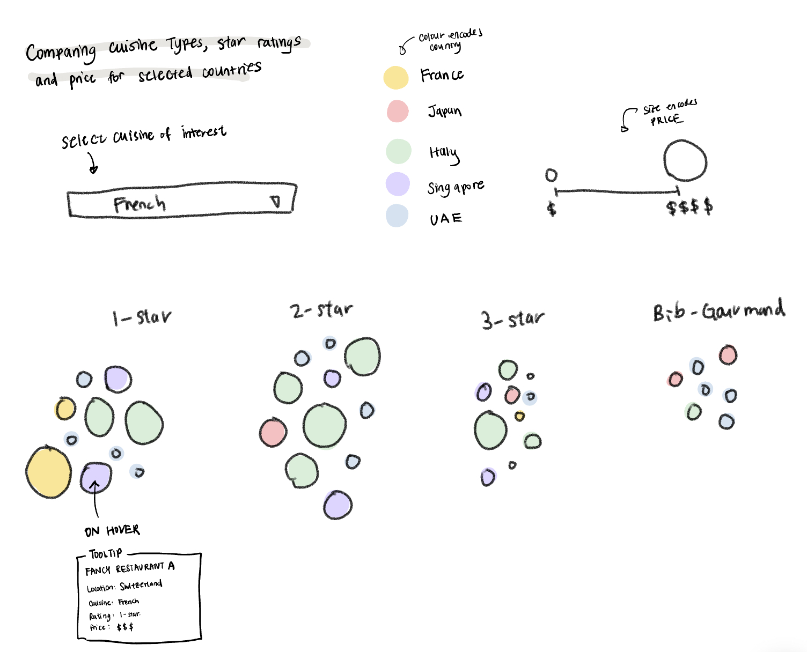

Wanderlust & Michelin Stars
About the MICHELIN Guide
The MICHELIN Guide is an annual publication created by the French tire company, MICHELIN, that dates back to the early 20th century. Each year, the MICHELIN Guide anonymously reviews restaurants around the globe and awards prestigious MICHELIN Star recognition for culinary excellence. The MICHELIN Guide covers over 40 countries and 5000+ restaurants and is one of the most renowned and trusted source of culinary expertise. In addition to the stars, the MICHELIN Guide also awards Bib Gourmand and MICHELIN Green Stars to restaurants.

1 Star MICHELIN
High-quality cooking, worth a stop

2 Star MICHELIN
Excellent cooking, worth a detour

3 Star MICHELIN
Exceptional cuisine, worth a special journey

Bib Gourmand
Exceptionally good food at moderate prices

MICHELIN Green Star
Culinary excellence with outstanding eco-friendly commitments
Global Tourism Data + Michelin Restaurant Distribution
Prototype Note: The two graphs on the right show examples of country-specific data that will be showed alongside the globe. In prototype 2, there will be a SWITCH button to switch views between tourism data and Michelin data. The current layout is not final.
Selection Panel: Users will select 5 countries of interest to explore further

Purpose of Travel
This graph above is a parallel axis graph that shows how travel purpose and number of michelin restaurants relates to each other. In the future, there will be a sliding scale that allows the graph to change by the year (only the first two lines will change since Michelin average price should not change per year —no yearly data). The different colors represent different countries, a tool tip will appear upon hovering to show more detailed information, such as the total business travelers, personal travelers, avg prices, etc. We are also thinking of rescaling the y-axis for the first two axis to make it "per 1000 people."
Bubble Graph: Innovative Visualization
This graph is our innovative visualization comparing cuisine types, price, and star ratings in our 5 countries of interest.
About the Team
Data Visualization @ Harvard University
Cassie Dai
MS Data Science
Cindy Lin
MS Health Data Science